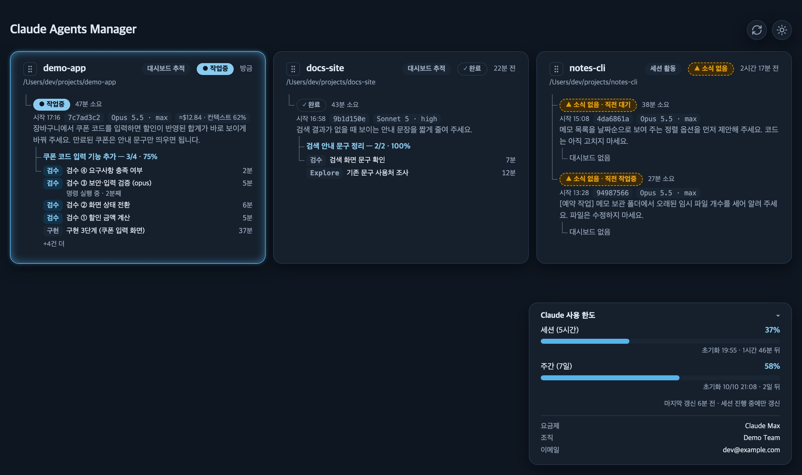

coding-harness는 Claude Code에 설계·구현·검수 절차와 팀 공통 코드 규칙을 얹는 설정 묶음입니다. 허브는 내 컴퓨터에서 돌고 있는 모든 Claude Code 프로젝트의 진행 상황을 한 화면에 모아 보여 주는 대시보드입니다.
처음 한 번만 하면 됩니다. 명령은 어느 폴더에서 실행해도 됩니다.
https://github.com/ibyron17/coding-harnessClaude Code 입력창에 아래 문장을 그대로 붙여 넣습니다. Claude가 저장소를 받고, 무엇이 설치될지 먼저 보여 준 뒤, 확인을 받아 설치합니다.
https://github.com/ibyron17/coding-harness 저장소를 ~/works/coding-harness 에 받아서 --scope user 로 설치해줘. 설치 전에 --dry-run 결과를 먼저 보여줘.허브도 쓰려면 이어서 “허브도 설치해줘”라고 하면 됩니다.
설치할 프로젝트 안이 아니라 바깥 폴더에 받습니다.
git clone https://github.com/ibyron17/coding-harness.git ~/works/coding-harness첫 줄은 무엇이 설치될지 보여 주기만 하고, 둘째 줄이 실제 설치입니다. 규칙 46개, 에이전트 4개, 명령 8개가 ~/.claude에 들어가 내 모든 프로젝트에 적용됩니다. 원래 있던 다른 파일은 건드리지 않습니다.
~/works/coding-harness/install.sh --scope user --dry-run
~/works/coding-harness/install.sh --scope user터미널에서 허브 파일을 설치한 뒤, Claude Code 입력창에서 세 명령을 차례로 입력합니다. /hub install은 세션 기록을 모으는 장치(훅)를 등록하는 단계이고, /hub off로 언제든 뺄 수 있습니다.
~/works/coding-harness/hub/install.sh/hub install
/hub server start
/hub업데이트는 한 줄입니다. Claude Code 입력창에 /harness-update를 입력하면 최신 버전을 받아 다시 설치합니다. 허브를 설치했다면 허브도 함께 갱신됩니다.
한 프로젝트에만 쓰고 싶으면 그 프로젝트 폴더에서 --scope user 대신 --scope project로 설치합니다. 이때 프로젝트의 .claude/ 폴더에 파일이 생기므로, 팀 저장소에 커밋할지 미리 정해 두세요.
평소처럼 Claude Code에 일을 시키면 됩니다. 절차는 Claude가 알아서 밟습니다.
요청을 받으면 Claude가 먼저 작업 크기를 판단하고, 어느 경로로 갈지 한 줄로 알려 줍니다.
| 작업 크기 | 예시 | 진행 순서 |
|---|---|---|
| 아주 작음 | 오타, 주석, 설정값 한 줄 | 바로 수정 |
| 작음 | 버그 수정, 한 모듈 안의 작은 기능, 테스트 추가 | 구현 → 검수 |
| 큼 | 새 모듈, 3개 이상 파일에 걸친 변경, 함수·API 모양 변경, 인증·결제·권한·데이터 삭제 | 설계 → 내 승인 → 구현 → 검수 |
검수에서 FAIL이 나오면 구현을 맡은 AI가 고치고 다시 검수를 받습니다. 세 번 안에 통과하지 못하면 멈추고 나에게 판단을 묻습니다. 검수를 통과하지 못한 코드는 커밋하지 않습니다.
내가 할 일은 두 가지입니다. 큰 작업의 설계 문서를 읽고 승인하는 것, 그리고 끝난 결과를 확인하는 것입니다.
| Claude Code 입력창 | 하는 일 |
|---|---|
/harness-update | coding-harness(와 허브)를 최신 버전으로 업데이트 |
/hub | 허브 화면 열기 |
/hub dashboard off/hub dashboard on | 이 프로젝트의 진행 기록(단계·진행률) 끄기·다시 켜기. 처음에는 켜져 있습니다. |
/prp-commit | “로그인 관련 변경만”처럼 말로 골라서 커밋 |
/prp-pr | 브랜치 변경을 정리해 GitHub PR 만들기 |
/code-review 123 | 번호를 준 GitHub PR을 검수. 내 작업의 검수는 자동으로 돕니다. |
/prp-commit·/prp-pr은 AI가 스스로 부를 수 없게 막혀 있어서, 내가 입력해야만 실행됩니다. 그냥 “커밋해줘”라고 말해도 됩니다. 반대로 설계 AI의 /prp-plan, 구현 AI의 /prp-implement, 검수 AI의 /code-review는 각 AI가 필요할 때 알아서 불러 쓰므로 따로 입력할 필요가 없습니다.
요청 문장에 「심층 설계」를 넣으면 가장 강한 모델로 설계하고, 「전수 검사」를 넣으면 저장소 전체를 규칙·테스트 기준으로 훑습니다. 프로젝트 루트의 CLAUDE.md에 개요·구조·성능 병목·빌드와 검증 명령·팀 컨벤션 다섯 가지를 적어 두면, 검수가 그 기준으로 확인합니다.
기술적인 내용은 빼고, 실제로 일할 때 달라지는 것만 적었습니다.
코드를 쓰는 AI와 검사하는 AI가 따로 있습니다. 검사하는 AI는 코드를 고칠 권한이 없고, 문제를 지적할 때마다 실패하는 테스트 같은 증거를 붙여야 합니다.
검수를 통과해야만 커밋합니다. 실제 기록에서 첫 구현 3건 중 1건이 이 단계에서 걸려 고쳐졌습니다(아래 비교).
코드를 쓰기 전에 설계 문서를 보고 승인합니다. 방향이 엇나간 채 한참 진행되는 일이 줄고, 왜 그렇게 만들었는지 기록이 남습니다.
오타는 바로 고치고, 작은 수정은 구현과 검수만, 큰 변경만 전체 절차를 밟습니다. 작은 일에 무거운 절차를 씌우지 않습니다.
함수 길이, 중첩 깊이, 테스트 먼저 쓰기 같은 규칙 46개가 모든 세션에 똑같이 적용됩니다. 사람마다, 세션마다 코드 스타일이 달라지는 일이 줄어듭니다.
설계처럼 판단이 중요한 단계에는 상위 모델을, 구현과 검수에는 Sonnet을, 단순 탐색에는 Haiku를 씁니다. 품질이 필요한 곳에 비용을 씁니다.
보고는 무엇이 달라졌고 무엇을 정해야 하는지부터 쉬운 말로 씁니다. 커밋 메시지도 개발자가 아니어도 이해할 수 있게 한 줄로 남깁니다.
규칙이 개선되면 /harness-update 한 줄로 받습니다. 내가 따로 만든 설정 파일은 건드리지 않습니다.
여러 프로젝트와 세션이 지금 무엇을 하는지 한 페이지에서 봅니다. 세션 아래에는 설계·구현·검수 에이전트가 한 줄씩 나옵니다.
한동안 새 기록이 없는 세션에는 「소식 없음」 표시가 붙습니다. 승인을 기다리며 방치된 작업을 놓치지 않습니다.
“쿠폰 기능 추가 3/4 · 75%”처럼 작업 제목과 단계 진행률이 보입니다. 진행 기록은 처음부터 켜져 있습니다.
5시간·7일 사용 한도가 얼마나 찼는지, 언제 초기화되는지 패널 하나로 확인합니다.
허브는 로컬에서만 돌고 보기 전용입니다. 무엇을 모을지(프롬프트 발췌, 사용량 등)는 직접 켜고 끕니다.

2026년 8월 3일부터 10월 8일까지 coding-harness로 진행한 실제 작업 144건의 검수 기록으로 비교했습니다.
같은 작업 144건을 두 경우로 나눠 본 것입니다. coding-harness가 없으면 별도 검수 없이 첫 구현이 그대로 커밋된다고 가정했습니다.
| coding-harness 없이 | coding-harness 사용 | |
|---|---|---|
| 코드 확인 | 만든 AI가 스스로 확인 | 별도 검수 AI가 증거를 붙여 확인 |
| 커밋 조건 | 정해진 조건 없음 | 검수 통과 필수 |
| 큰 변경 | 바로 코딩 시작 | 설계 문서 → 승인 → 구현 |
| 코드 기준 | 세션마다 다름 | 공통 규칙 46개 |
| 진행 상황 | 창마다 열어서 확인 | 허브 한 화면 |
| 보고·커밋 메시지 | 그때그때 다름 | 쉬운 말 한 줄 |
작업 144건 기준. 셋 중 둘은 한 번에 통과했고, 나머지는 고친 뒤 다시 검수를 받았습니다.
프로젝트 종류와 관계없이 첫 구현 4건 중 1건 이상이 검수에서 걸렸습니다.
FAIL 사유를 분류해 적기 시작한 뒤의 FAIL 20건. 한 건에 사유가 둘 이상일 수 있습니다.